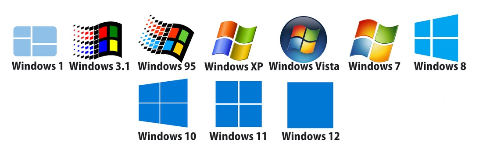

(включает в себя приём микрокода от BIOS чипа материнской платы, управление оперативной памятью, диагностику неисправностей и сочленение установленного оборудования и программ к нему)
(включает в себя установку и удаление программ, запуск программ и участие работе “железных” компонентов от имени программ)
(всё, что можно создавать, перемещать и удалять на твердотельных накопителях)
(графического или командного/текстового) для обеспечения или контроля всех или многих указанных выше функций

Первые продукты с названием «Windows» от Microsoft не были операционными системами. Это были графические среды для MS-DOS. На фоне успеха, в том числе и коммерческого, пользовательского интерфейса на Apple Lisa, компания решила реализовать графический интерфейс на IBM PC с MS-DOS. В отличии от относительно дешевых IBM PC, Apple Lisa стоили дорого (почти 10 тысяч долларов), и немногие покупатели могли позволить купить их. Microsoft решила занять нишу дешевых компьютеров с графическим интерфейсом. При этом низкая стоимость достигалась экономией на комплектующих и более низкая производительность, по сравнению с Lisa, избежать не получилось. Так, в 1985, 1987 и в 1990 выходят первые три версии Windows — 1.0, 2.0 и 3.0. Причем за первые шесть месяцев после релиза Windows 3.0 было продано более 1 миллиона экземпляров. Дальнейшее развитие Windows можно разделить на два направления — Windows на базе MS-DOS и Windows на базе NT.
сурс1 сурс2